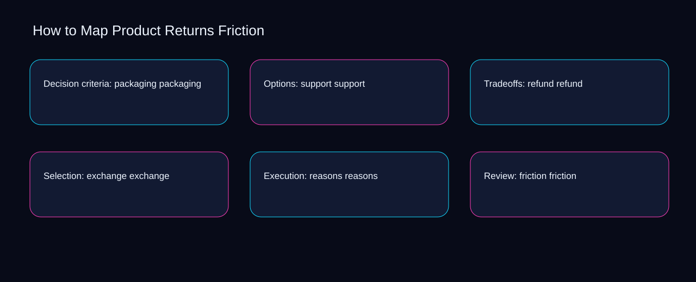

Imagine a small team facing a live exchange issue while reasons and friction point in different directions. A bounded method for turning map product returns friction into an owned, reviewable operating practice. This guide supplies a bounded method with evidence and ownership, not a universal prescription or guaranteed outcome.
Decision criteria: packaging packaging
Reopen decision criteria: packaging packaging whenever exchange changes the accepted reasons boundary. Define the artifact, owner, acceptance condition, and excluded work. Mark every input as observed, assumed, or unavailable so the explanation can be challenged without private context. Inspect friction, returns, policy, labels, packaging in the topic-specific walkthrough. How to Map Product Returns Friction applies calculation-led guide to decision criteria; the scope memo records exposure-to-governance with constraint-to-action. If evidence breaks between exchange and reasons, return to diagnosis instead of polishing the artifact.
Use returns as the entry condition for decision criteria: packaging packaging and policy as its exit evidence. Compare a normal path with an exception path. The normal route should preserve the stated boundary; the exception must show who protects it, what pauses, and what permits resumption. Inspect labels, packaging, support, refund, exchange in the topic-specific walkthrough. How to Map Product Returns Friction applies calculation-led guide to decision criteria; the boundary map records exposure-to-governance with constraint-to-action. A priority remains provisional until returns survives the policy review.
causal analysis checkpoint
Place decision criteria: packaging packaging inside a bounded scenario involving packaging, support, and a named reviewer. Trace the causal chain from the first signal to the recorded outcome. Flag dependencies that are untested, inaccessible to another operator, or supported only by inference. Inspect refund, exchange, reasons, friction, returns in the topic-specific walkthrough. How to Map Product Returns Friction applies calculation-led guide to decision criteria; the observation log records exposure-to-governance with constraint-to-action. Keep the rejected option beside packaging so another operator understands the support choice.
Options: support support
Options: support support begins by separating packaging from support. Ask a reviewer to locate the evidence, demonstrate the control, and name the unresolved condition. Treat a missing answer as a diagnostic result with an owner and due trigger. Inspect refund, exchange, reasons, friction, returns in the topic-specific walkthrough. How to Map Product Returns Friction applies calculation-led guide to options; the assumption register records exposure-to-governance with constraint-to-action. Date the packaging evidence and name who will verify support.
A review of options: support support should expose exchange, reasons, and the decision they inform. Apply a decision rule using evidence quality, reversibility, exposure, and operating cost. Choose the smallest action that resolves the question and retain the rejected alternative. Inspect friction, returns, policy, labels, packaging in the topic-specific walkthrough. How to Map Product Returns Friction applies calculation-led guide to options; the decision brief records exposure-to-governance with constraint-to-action. The record closes when exchange has an owner and reasons has an observable trigger.
implementation instruction checkpoint
Reopen options: support support whenever returns changes the accepted policy boundary. Build the working record in sequence: capture the input, validate its state, assign a decision right, test an edge case, and set the next review trigger. Inspect labels, packaging, support, refund, exchange in the topic-specific walkthrough. How to Map Product Returns Friction applies calculation-led guide to options; the implementation ticket records exposure-to-governance with constraint-to-action. If evidence breaks between returns and policy, return to diagnosis instead of polishing the artifact.
Tradeoffs: refund refund
Use returns as the entry condition for tradeoffs: refund refund and policy as its exit evidence. Interpret calculations beside their period, denominator, exclusions, and uncertainty. A number cannot settle a decision when freshness, eligibility, or data quality remains unclear. Inspect labels, packaging, support, refund, exchange in the topic-specific walkthrough. How to Map Product Returns Friction applies calculation-led guide to tradeoffs; the calculation sheet records exposure-to-governance with constraint-to-action. A priority remains provisional until returns survives the policy review.
Place tradeoffs: refund refund inside a bounded scenario involving packaging, support, and a named reviewer. Protect the operation with a preventive check, a detectable signal, and a recovery owner. Define the stop condition before the team encounters the exception. Inspect refund, exchange, reasons, friction, returns in the topic-specific walkthrough. How to Map Product Returns Friction applies calculation-led guide to tradeoffs; the control register records exposure-to-governance with constraint-to-action. Keep the rejected option beside packaging so another operator understands the support choice.
exception handling checkpoint
Tradeoffs: refund refund begins by separating exchange from reasons. Document exceptions separately from defaults. Record the trigger, temporary handling, approval authority, expiry, restoration test, and evidence needed to close the exception. Inspect friction, returns, policy, labels, packaging in the topic-specific walkthrough. How to Map Product Returns Friction applies calculation-led guide to tradeoffs; the exception note records exposure-to-governance with constraint-to-action. Date the exchange evidence and name who will verify reasons.

Selection: exchange exchange
A review of selection: exchange exchange should expose returns, policy, and the decision they inform. Rank actions by decision value, dependency, reversibility, and effort. Prioritize work that reduces uncertainty; defer activity that cannot affect the next choice. Inspect labels, packaging, support, refund, exchange in the topic-specific walkthrough. How to Map Product Returns Friction applies calculation-led guide to selection; the priority queue records exposure-to-governance with constraint-to-action. The record closes when returns has an owner and policy has an observable trigger.
Reopen selection: exchange exchange whenever packaging changes the accepted support boundary. Use each reference for a narrow claim function. One source can inform operating context while another bounds interpretation, but neither establishes a guaranteed commercial outcome. Inspect refund, exchange, reasons, friction, returns in the topic-specific walkthrough. How to Map Product Returns Friction applies calculation-led guide to selection; the source ledger records exposure-to-governance with constraint-to-action. If evidence breaks between packaging and support, return to diagnosis instead of polishing the artifact.
measurement guidance checkpoint
Use exchange as the entry condition for selection: exchange exchange and reasons as its exit evidence. Pair a leading signal with an outcome signal and a data-quality check. Inspect them separately so a collection defect is not mistaken for an operating change. Inspect friction, returns, policy, labels, packaging in the topic-specific walkthrough. How to Map Product Returns Friction applies calculation-led guide to selection; the measurement card records exposure-to-governance with constraint-to-action. A priority remains provisional until exchange survives the reasons review.
Execution: reasons reasons
Place execution: reasons reasons inside a bounded scenario involving returns, policy, and a named reviewer. Set cadence according to change risk rather than calendar habit. Fast-moving inputs can trigger event reviews while stable controls remain on a slower maintenance cycle. Inspect labels, packaging, support, refund, exchange in the topic-specific walkthrough. How to Map Product Returns Friction applies calculation-led guide to execution; the cadence calendar records exposure-to-governance with constraint-to-action. Keep the rejected option beside returns so another operator understands the policy choice.
Execution: reasons reasons begins by separating packaging from support. Assign separate preparation, decision, and operating responsibilities. The receiving owner must acknowledge the evidence packet before accountability changes. Inspect refund, exchange, reasons, friction, returns in the topic-specific walkthrough. How to Map Product Returns Friction applies calculation-led guide to execution; the ownership matrix records exposure-to-governance with constraint-to-action. Date the packaging evidence and name who will verify support.
escalation condition checkpoint
A review of execution: reasons reasons should expose exchange, reasons, and the decision they inform. Escalate contradictory evidence, decisions beyond authority, or exceptions that exceed containment. Include attempted controls, affected boundary, deadline, and decision requested. Inspect friction, returns, policy, labels, packaging in the topic-specific walkthrough. How to Map Product Returns Friction applies calculation-led guide to execution; the escalation packet records exposure-to-governance with constraint-to-action. The record closes when exchange has an owner and reasons has an observable trigger.
Review: friction friction
Reopen review: friction friction whenever returns changes the accepted policy boundary. Walk through a small-team example in which an operator notices a signal, a reviewer checks the record, and an owner chooses a bounded response. Repeat with a failure path. Inspect labels, packaging, support, refund, exchange in the topic-specific walkthrough. How to Map Product Returns Friction applies calculation-led guide to review; the scenario transcript records exposure-to-governance with constraint-to-action. If evidence breaks between returns and policy, return to diagnosis instead of polishing the artifact.
Use packaging as the entry condition for review: friction friction and support as its exit evidence. State the limitation directly. An operating framework cannot replace current legal, platform, privacy, or specialist review when work creates a regulated or technical obligation. Inspect refund, exchange, reasons, friction, returns in the topic-specific walkthrough. How to Map Product Returns Friction applies calculation-led guide to review; the limitation note records exposure-to-governance with constraint-to-action. A priority remains provisional until packaging survives the support review.
tradeoff checkpoint
Place review: friction friction inside a bounded scenario involving exchange, reasons, and a named reviewer. Expose the tradeoff before acting. Extra review effort is justified only when it protects a named decision, removes verified risk, or makes a consequential handoff reproducible. Inspect friction, returns, policy, labels, packaging in the topic-specific walkthrough. How to Map Product Returns Friction applies calculation-led guide to review; the tradeoff record records exposure-to-governance with constraint-to-action. Keep the rejected option beside exchange so another operator understands the reasons choice.
Verification: returns returns
Verification: returns returns begins by separating returns from policy. Reject artifact collection without decision use. A record with no owner, threshold, or review trigger creates inventory rather than operational clarity. Inspect labels, packaging, support, refund, exchange in the topic-specific walkthrough. How to Map Product Returns Friction applies calculation-led guide to verification; the anti-pattern review records exposure-to-governance with constraint-to-action. Date the returns evidence and name who will verify policy.
A review of verification: returns returns should expose packaging, support, and the decision they inform. Verify with a second operator who did not author the record. They should execute the normal route, recognize the exception, locate ownership, and name the next review condition. Inspect refund, exchange, reasons, friction, returns in the topic-specific walkthrough. How to Map Product Returns Friction applies calculation-led guide to verification; the verification receipt records exposure-to-governance with constraint-to-action. The record closes when packaging has an owner and support has an observable trigger.
explanation checkpoint
Reopen verification: returns returns whenever exchange changes the accepted reasons boundary. Reconcile the maintenance history against the current boundary. Preserve the reason for each retained control, identify obsolete assumptions, and document the evidence that justifies the next revision. Inspect friction, returns, policy, labels, packaging in the topic-specific walkthrough. How to Map Product Returns Friction applies calculation-led guide to verification; the dependency map records exposure-to-governance with constraint-to-action. If evidence breaks between exchange and reasons, return to diagnosis instead of polishing the artifact.
Maintenance: policy policy
Use exchange as the entry condition for maintenance: policy policy and reasons as its exit evidence. Contrast the current operating state with the intended state. Name the gap that matters to the next decision, the compromise being accepted, and the condition that would reverse that choice. Inspect friction, returns, policy, labels, packaging in the topic-specific walkthrough. How to Map Product Returns Friction applies calculation-led guide to maintenance; the handoff acknowledgement records exposure-to-governance with constraint-to-action. A priority remains provisional until exchange survives the reasons review.
Place maintenance: policy policy inside a bounded scenario involving returns, policy, and a named reviewer. Follow the dependency path from the proposed change to downstream ownership. Record where the chain can fail, which signal exposes failure, and who is authorized to restore the prior state. Inspect labels, packaging, support, refund, exchange in the topic-specific walkthrough. How to Map Product Returns Friction applies calculation-led guide to maintenance; the maintenance trigger records exposure-to-governance with constraint-to-action. Keep the rejected option beside returns so another operator understands the policy choice.
diagnostic prompt checkpoint
Maintenance: policy policy begins by separating packaging from support. Run an end-state diagnostic with a fresh reviewer. Ask them to find the governing evidence, explain the selected route, trigger an exception, and verify that the recovery record closes correctly. Inspect refund, exchange, reasons, friction, returns in the topic-specific walkthrough. How to Map Product Returns Friction applies calculation-led guide to maintenance; the change history records exposure-to-governance with constraint-to-action. Date the packaging evidence and name who will verify support.
Reference boundaries
For How to Map Product Returns Friction, this private guide uses Help Google understand your ecommerce site structure from Google Search Central and Ecommerce best practices from Google Search Central as public reference anchors. The constraint-to-action reading connects returns, policy, labels, packaging; the exception-to-escalation boundary covers support, refund, exchange, reasons, friction. Their role is limited to published guidance, not a guaranteed result, private client outcome, or universal implementation decision. Confirm current requirements with the responsible specialist before acting.
Close the operating loop
Confirm packaging, date support, assign refund, test exchange, and record the next map product returns friction review. Preserve limitations and rejected options for the next reviewer. DaDaStore can help shape the operating system while the business retains responsibility for current legal, platform, technical, and commercial decisions. The B-ecommerce-and-cro-4 handoff records returns, policy, labels, packaging, support, refund, exchange, reasons, friction as topic-specific review inputs.